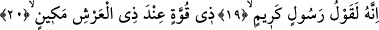

gelmesiyle insanın üzerine dolan rahatlık ve esinti, “nefes” adındaki özel esintiye
benzetilmiş ve o esintiye, istiâre sanatı gerçekleştirilmek için benzetilenin adı verilerek
“nefes” denmiştir. Böylece sabah, bu esintiyle soluk alıp veriyor şeklinde kılınmıştır.
Sonra sabahın soluk alıp vermesi ifâdesi sabahın gelmesi, doğması, gecenin karanlığını
açması anlamında kinâye yoluyla kullanılmıştır. Çünkü yukarda işâret ettiğimiz mânâda
sabahın nefes alması, aydınlığın ortaya çıkmasının lâzımıdır. İşte bu lâzımiyet yoluyla
istiâreden kaynaklanan kinâye sanatı gerçekleşmiş olmaktadır.
Kâşânî okuduğumuz bu son âyeti şöyle açıklamaktadır: Geceye yemin ederim yâni ölü
cesedin üzerine çöken zulmet gecesine yemin ederim. Bu gecenin, ruhun cesede taalluku
ve üzerine güneşin nurunun doğmasıyla hayat nuruyla zulmetinin çekildiği ana yemin
ederim. Sabaha da yemin ederim yâni yukarda ifâde ettiğimiz güneşin doğması nurunun
bedene hayat vermek sûretiyle yayıldığı ana, onun sabahına yemin ederim.
et-Te’vilatu’n-Necmiyye’de denilir ki: Burada Allah şeriatın ahkamına uyarak,
tabiatın eserlerine aykırı davranarak beşeriyet gaybının zalamının/karanlığının açıldığı
tabiat gecesine ve rûhâniyet neharının/gündüzünün sabahına işâret ediyor. Bu rûhâniyet
gündüzünün sabahı aydınlanıp tarikat adabını ve hakikat rüsûmunu ortaya çıkardığı
andaki sabaha işâret ediyor. Bu, yeminlerin en büyüğü ve en faziletlisi olmaktadır.
19-20. O (Kur’an), şüphesiz değerli, güçlü ve Arş’ın sâhibi (Allah’ın) katında
itibarlı bir elçinin (Cebrâil’in) getirdiği sözdür.
Burada “o” zamiriyle işâret edilen –her ne kadar daha önceki ifâdelerde kelime
olarak zikri geçmese de- Kur’an’dır. Bu zamirin daha önce geçmeyen bir kelime yerine
kullanılması, onun bilinmesinden dolayıdır. Buna göre şöyle denmiş olmaktadır: O,
yukarda zikredilen ve gerçekleşeceği söylenen korkunç musîbetleri dile getiren Kur’an-ı
Kerim’dir. Bu cümle, yukardan beri gelen yeminin cevabı olmaktadır. Yukarda
zikredilen nesnelerin üzerine yemin edilmesi, onlarda Allah’ın hikmetinin kemal ve
kudretinin azametinin ortaya çıkmasından dolayıdır.
Fakir (Bursevî)’nin kanâatine göre yukarda zikredilen nesnelerin üzerine yemin
edilmesinin sırrı, Kur’an’ın Allah’ın katından gelen bir nur olmasından dolayıdır. Bu
nur, sâdece kamer mesâbesinde olan nurâni kalbe, şems mesâbesinde olan ruha, diğer
aydınlatıcı gezegenler mesâbesinde olan rûhânî kuvvetlere tecelli edip akseder. Bu
nurlar insâni varlıkta zuhûr etmez, tecelli etmez. Ancak nefsî ve maddî izler kaybolup
ruhî ve kalbî izler ortaya çıkınca tecelli eder. Beden karanlığında ruh nurları ve ruhun
kuvvetleri doğunca, vücuddaki her şeyi aydınlatır ve karanlık kaybolur.
Âyet-i kerimede Kur’an, “kerim bir elçinin sözü” olarak gösteriliyor. Bu kerim elçi
Cebrâil (a.s.)’dır. O, Kur’an’ı Allah’ın katından getirip söylemektedir.